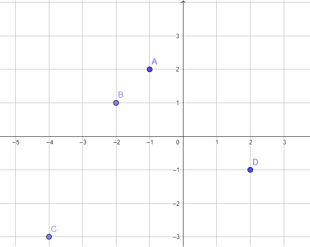

Consideriamo i punti \(A\), \(B\), \(C\), \(D\) rappresentati in figura.
Stabilire quali tra di essi appartengono alla retta associata all'equazione
\[
-2x + y = 5
\]

Consideriamo i punti
\[
A\left(-1\,;\,\,2\right) \,\,\,\, B\left(1\,;\,\,3\right) \,\,\,\, C\left(\dfrac{4}{3}\,;\,\,-\dfrac{3}{2}\right)
\]
Stabilire quali tra di essi appartengono alla retta associata all'equazione
\[
3x + 2y = 1
\]
Suggerimento:
Perché un punto \(P(\color{red}{}x\color{gray}{}\,,\,\,\color{blue}{}y\color{gray}{})\) appartenga alla retta, le sue coordinate
devono soddisfare l'equazione \(3 \cdot \color{red}{}x\color{gray}{} + 2 \cdot \color{blue}{}y\color{gray}{} = 1\).
Ad esempio:
-
il punto \(P(\color{red}{}-5\color{gray}{}\,,\,\,\color{blue}{}8\color{gray}{})\) appartiene alla retta perché le sue coordinate soddisfano l'equazione:
\[
\begin{align*}
&3 \cdot \color{red}{}(-5)\color{gray}{} + 2 \cdot \color{blue}{}8\color{gray}{} = 1
\\\\
&-15 + 16 = 1
\\\\
&1 = 1 \,\,\,\,\text{(vero)}
\end{align*}
\]
-
il punto \(P(\color{red}{}5\color{gray}{}\,,\,\,\color{blue}{}7\color{gray}{})\) non appartiene alla retta perché le sue coordinate non soddisfano l'equazione:
\[
\begin{align*}
&3 \cdot \color{red}{}5\color{gray}{} + 2 \cdot \color{blue}{}7\color{gray}{} = 1
\\\\
&15 + 14 = 1
\\\\
&29 = 1 \,\,\,\,\text{(falso)}
\end{align*}
\]
Consideriamo la retta \(r\) che abbia come
coefficiente angolare la soluzione
dell'equazione
\[
-3 \left(-\dfrac{1}{2}m - 2\right) -5 = \dfrac{5m}{2}
\]
e
termine noto uguale a \(-1\).
-
Scrivere l'equazione della retta \(r\).
-
Stabilire se il punto \(A\) di coordinate \((2\,;\,\,1)\) appartiene alla retta \(r\).
-
Stabilire la retta \(r\) passa per il punto \(B\) di coordinate \((-3\,;\,\,2)\).